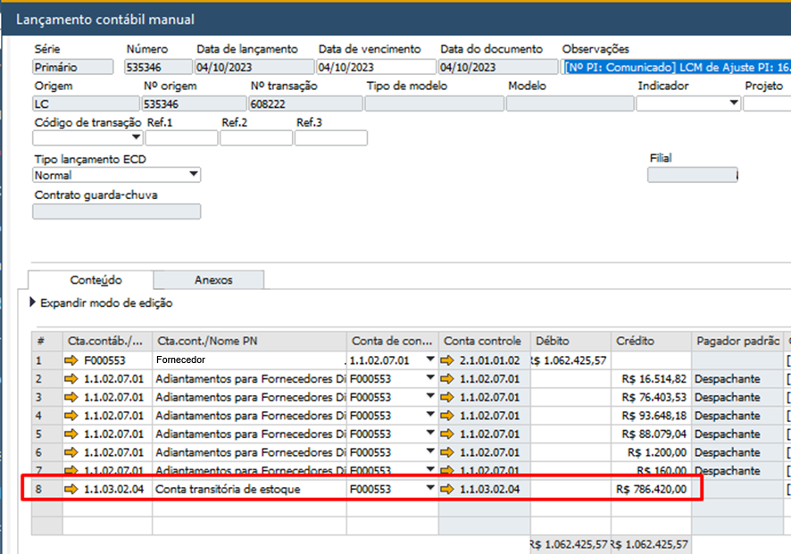
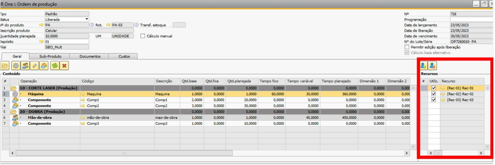
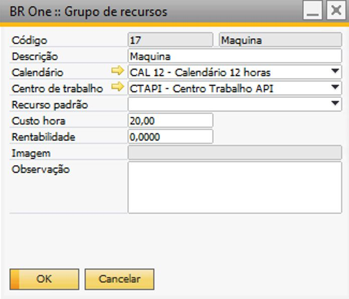
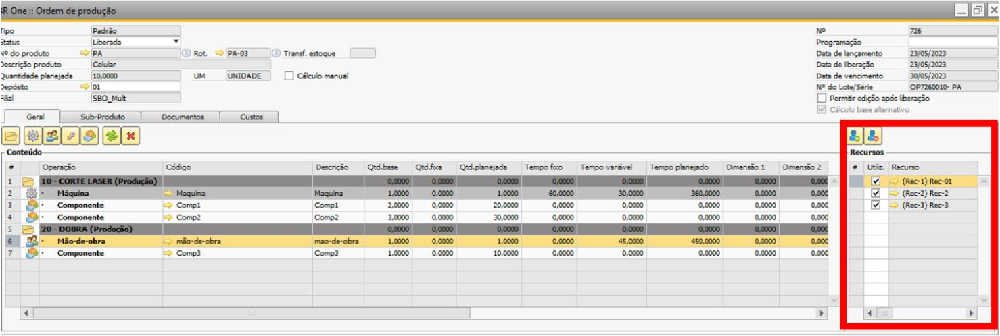
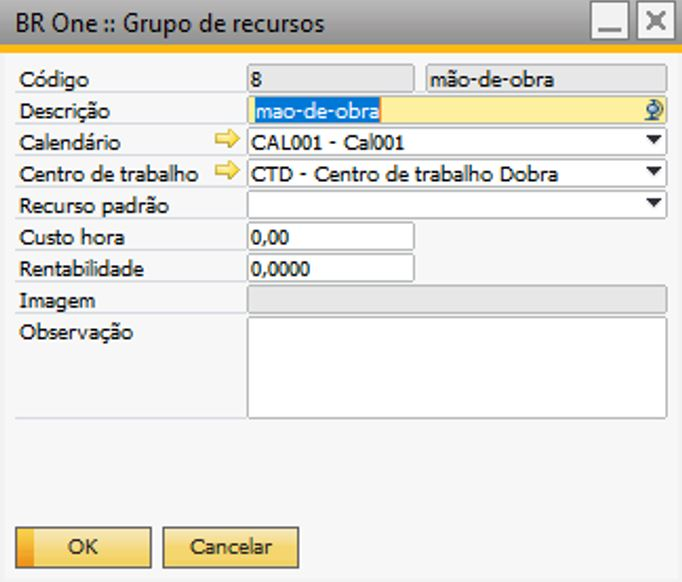
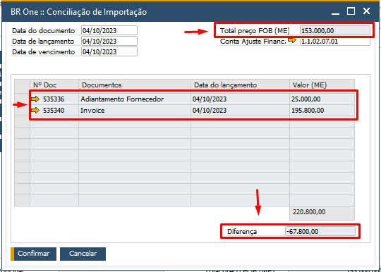
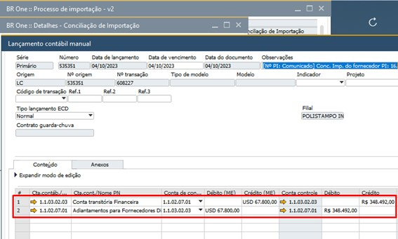
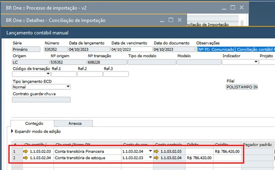

GGF antecipado
Nota
A partir da versão 4.11.333 do BR One, “GGF Arbitrado” foi renomeado para “GGF Antecipado”.
O GGF antecipado agrega os custos dos recursos no momento da realização da entrada do Produto Acabado, permitindo obter um custo atualizado antes do fechamento de custo mensal. No fechamento de custo mensal, são realizados os rateios de todas as contas cadastradas no GGF e, com base no que já foi antecipado, são realizados os lançamentos de ajustes necessários.
Todas as ordens de produção que possuírem grupo de recurso com tempo planejado e um recurso vinculado ao grupo, com a flag “Utilizar GGF antecipado” marcada serão calculados o custo hora com base no parâmetro “Custo múltiplos recursos” .
Abaixo será demonstrado um exemplo de roteiro, e a criação da Ordem de Produção com seus apontamentos de produção “Entrada de PA”, para simular o cálculo do GGF antecipado
Cadastro de Roteiro:
{kind=link}
Ordem de produção: Quantidade planejada 10

Nessa ordem possuem duas operações, na primeira operação contém o grupo de recurso “máquina”, que possuem três recursos vinculados.
Grupo De Recurso: Máquina
 {kind=link}
{kind=link}
O custo horas deste grupo de recurso é de R$ 20,00.
Recursos:
Recurso-01:
{kind=link}
Recurso-02:
{kind=link}
Recurso-03:
{kind=link}
Custo hora dos recursos:
Rec-01: R$ 100,00
Rec-02: R$ 50,00
Rec-03: R$ 0,00
Na segunda operação contém o grupo de recurso “mão de obra”, que possuem três recursos vinculados.
Grupo De Recurso: Mão de obra
 {kind=link}
{kind=link}
O custo horas deste grupo de recurso é de R$ 0,00.
Recursos:
Recurso-1:
{kind=link}
Recurso-2:
{kind=link}
Recurso-3:
{kind=link}
Custo hora dos recursos:
Rec-1: $ 50,00
Rec-2: R$ 15,00
Rec-3: R$ 0,00
O lançamento contábil do GGF antecipado é gerado no momento da entrada do produto acabado (PA) de acordo com a quantidade apontada.
Nessa ordem de produção a primeira entrada de produto acabado foi de 7 PAs.
Para produção de um produto acabado é utilizado o custo de R$ 34,85 dos componentes.
Para recuperação do custo do GGF antecipado é levado em consideração os parâmetros das configurações de produção na aba Geral
Iremos simular a entrada de produto acabado com todas as configurações de produção no campo Custo múltiplos recursos.
Para acessar as Configurações de produção é necessário ir no menu:
Administração -> Definição -> Produção -> Configurações de produção
Configurações de Produção - Aba Geral:
Custo múltiplos recursos: Mínimo
{kind=link}
É recuperado o custo hora de todos os recursos, vinculados em cada grupo de recurso na OP, para encontrar o menor custo hora.
Na operação 10 temos o grupo de recurso Maquina, foram encontrados os custos dos três recursos:
Rec-01 Custo hora R$100,00
Rec-02 Custo hora R$50,00
Rec-03 Custo hora R$ 0,00
IMPORTANTE
Para recursos com o custo 0 (zero) o sistema irá substituir o custo pelo custo do grupo de recuso, neste caso o custo hora do grupo é: R$ 20,00
Neste caso o menor custo encontrado é R$20,00
Para o grupo de recurso máquina o tempo planejado é de 360 minutos, para encontrar o custo total para produzir um PA é utilizado a seguinte formula:
Custo dos Recursos por unidade de PA= ((Custo do recurso encontrado * tempo planejado em horas) / quantidade planejada do produto acabado)
Custo dos Recursos por unidade de PA= (20,00 * (360 /60)) / 10
Custo dos Recursos por unidade de PA= (20,00 * 6 )/ 10
Custo dos Recursos por unidade de PA= 12,00
Na Operação 20 temos o grupo de recurso Mão de obra, foram encontrados os custos dos três recursos:
Rec-1 Custo hora R$50,00
Rec-2 Custo hora R$15,00
Rec-3 Custo hora R$ 0,00
IMPORTANTE
Para recursos com o custo 0 (zero) o sistema irá substituir o custo pelo custo do grupo de recuso, neste caso o custo hora do grupo é: R$ 0,00
Neste caso o menor custo encontrado é R$ 0,00
Para o grupo de recurso mão de obra o tempo planejado é de 45 minutos, para encontrar o custo total para produzir um PA é utilizado a seguinte formula:
Custo dos Recursos por unidade de PA= (Custo do recurso encontrado * Tempo planejado em horas / Quantidade planejada do produto acabado)
Custo dos Recursos por unidade de PA= (0,00 * (450 /60) / 10
Custo dos Recursos por unidade de PA= (0,00 * 7,5) / 10
Custo dos Recursos por unidade de PA= 0,00
Logo o custo unitário do PA será:
Custo unitário= (Soma do Custo dos Recursos por unidade de PA) + (Soma do custo dos componentes por unidade de PA)
Custo unitário= (12,00 + 0,00) + (11,00+ 8,75+15,60)
Custo unitário= 12,00 + 34,85
Custo unitário= 46,85
{kind=link}
Para geração do LCM do GGF antecipado é realizado a soma do Custo dos Recursos por unidade de PA de cada grupo de recurso encontrado e multiplicado pela quantidade apontada.
Valor do LCM= (Soma do Custo dos Recursos por unidade de PA) Quantidade apontada
Valor do LCM= (12,00 + 0,00) 7
Valor do LCM= 84,00
{kind=link}
LCM:
{kind=link}
Configurações de Produção - Aba Geral:
Custo múltiplos recursos: Médio
{kind=link}
É recuperado o custo hora de todos os recursos, vinculados em cada grupo de recurso na OP, para somar e dividir pela quantidade de recursos e encontrar a média do custo hora.
Na operação 10 temos o grupo de recurso Maquina, foram encontrados os custos dos três recursos:
Rec-01 Custo hora R$100,00
Rec-02 Custo hora R$50,00
Rec-03 Custo hora R$ 0,00
IMPORTANTE
Para recursos com o custo 0 (zero) o sistema irá substituir o custo pelo custo do grupo de recuso, neste caso o custo hora do grupo é: R$ 20,00
Então será feita a soma 100,00 + 50,00 + 20,00 = 170,00 e será dividido pela quantidade de recursos encontrados, nesse caso 170 será divido por 3.
Custo hora = 170,00 / 3
Custo hora = 56,67
Neste caso a média do custo encontrado é R$56,67
Para o grupo de recurso máquina o tempo planejado é de 360 minutos, para encontrar o custo total para produzir um PA é utilizado a seguinte fórmula:
Custo dos Recursos por unidade de PA= (Custo do recurso encontrado * Tempo planejado em horas / Quantidade planejada do produto acabado)
Custo dos Recursos por unidade de PA= (56,67* (360 /60)) / 10
Custo dos Recursos por unidade de PA= (56,67* 6) / 10
Custo dos Recursos por unidade de PA= 34,00
Na Operação 20 temos o grupo de recurso Mão de obra, foram encontrados os custos dos três recursos:
Rec-1 Custo hora R$50,00
Rec-2 Custo hora R$15,00
Rec-3 Custo hora R$ 0,00
IMPORTANTE
Para recursos com o custo 0 (zero) o sistema irá substituir o custo pelo custo do grupo de recuso, neste caso o custo hora do grupo é: R$ 0,00
Então será feita a soma 50,00 + 15,00 + 0,00 = 65,00 e será dividido pela quantidade de recursos encontrados, nesse caso 65 será divido por 3.
Custo hora= 65,00 / 3
Custo hora= 21,67
Neste caso a média do custo encontrado é R$21,67
Para o grupo de recurso mão de obra o tempo planejado é de 45 minutos, para encontrar o custo total para produzir um PA é utilizado a seguinte fórmula:
Custo dos Recursos por unidade de PA= (Custo do recurso encontrado * Tempo planejado em horas / Quantidade planejada do produto acabado)
Custo dos Recursos por unidade de PA= (21,67 * (450/60)) / 10)
Custo dos Recursos por unidade de PA= (21,67* 7,5)/ 10
Custo dos Recursos por unidade de PA= 16,25
Logo o custo unitário do PA será:
Custo unitário= (Soma do Custo dos Recursos por unidade de PA) + (Soma do custo dos componentes por unidade de PA)
Custo unitário= (34,00 + 16,25) + (11,00 + 8,75 + 15,60)
Custo unitário= 50,25+ 34,85
Custo unitário= 85,10

Para geração do LCM do GGF antecipado é realizado a soma do Custo dos Recursos por unidade de PA de cada grupo de recurso encontrado e multiplicado pela quantidade apontada.
Valor do LCM= (Soma do Custo dos Recursos por unidade de PA) Quantidade apontada
Valor do LCM= (34,002+ 16,25) 7
Valor do LCM= 351,75

LCM:

Configurações de Produção - Aba Geral:
Custo múltiplos recursos: Máximo
{kind=link}
É recuperado o custo hora de todos os recursos, vinculados em cada grupo de recurso na OP, para encontrar o maior custo hora.
Na operação 10 temos o grupo de recurso Maquina, foram encontrados os custos dos três recursos:
Rec-01 Custo hora R$100,00
Rec-02 Custo hora R$50,00
Rec-03 Custo hora R$ 0,00
IMPORTANTE
Para recursos com o custo 0 (zero) o sistema irá substituir o custo pelo custo do grupo de recuso, neste caso o custo hora do grupo é: R$ 20,00
Neste caso o maior custo encontrado é R$100,00
Para o grupo de recurso máquina o tempo planejado é de 360 minutos, para encontrar o custo total para produzir um PA é utilizado a seguinte fórmula:
Custo dos Recursos por unidade de PA= (Custo do recurso encontrado * Tempo planejado em horas / Quantidade planejada do produto acabado)
Custo dos Recursos por unidade de PA= (100,00 * (360 /60)) / 10
Custo dos Recursos por unidade de PA= (100,00 * 6) / 10
Custo dos Recursos por unidade de PA= 60,00
Na Operação 20 temos o grupo de recurso Mão de obra, foram encontrados os custos dos três recursos:
Rec-1 Custo hora R$50,00
Rec-2 Custo hora R$15,00
Rec-3 Custo hora R$ 0,00
IMPORTANTE
Para recursos com o custo 0 (zero) o sistema irá substituir o custo pelo custo do grupo de recuso, neste caso o custo hora do grupo é: R$ 0,00
Neste caso o maior custo encontrado é R$ 50,00
Para o grupo de recurso mão de obra o tempo planejado é de 45 minutos, para encontrar o custo total para produzir um PA é utilizado a seguinte fórmula:
Custo dos Recursos por unidade de PA= (Custo do recurso encontrado * Tempo planejado em horas / Quantidade planejada do produto acabado)
Custo dos Recursos por unidade de PA= (50,00 * (450/60) )/ 10
Custo dos Recursos por unidade de PA= (50,00 * 7,5) / 10
Custo dos Recursos por unidade de PA= 37,50
Logo o custo unitário do PA será:
Custo unitário= (Soma do Custo dos Recursos por unidade de PA) + (Soma do custo dos componentes por unidade de PA)
Custo unitário= (60,00 + 37,50) + (11,00 + 8,75 + 15,60)
Custo unitário= 97,50 + 34,85
Custo unitário= 132,35

Para geração do LCM do GGF antecipado é realizado a soma do Custo dos Recursos por unidade de PA de cada grupo de recurso encontrado e multiplicado pela quantidade apontada.
Valor do LCM= (Soma do Custo dos Recursos por unidade de PA) Quantidade apontada
Valor do LCM= (60,00 +37,50) 7
Valor do LCM= 682,50

LCM: